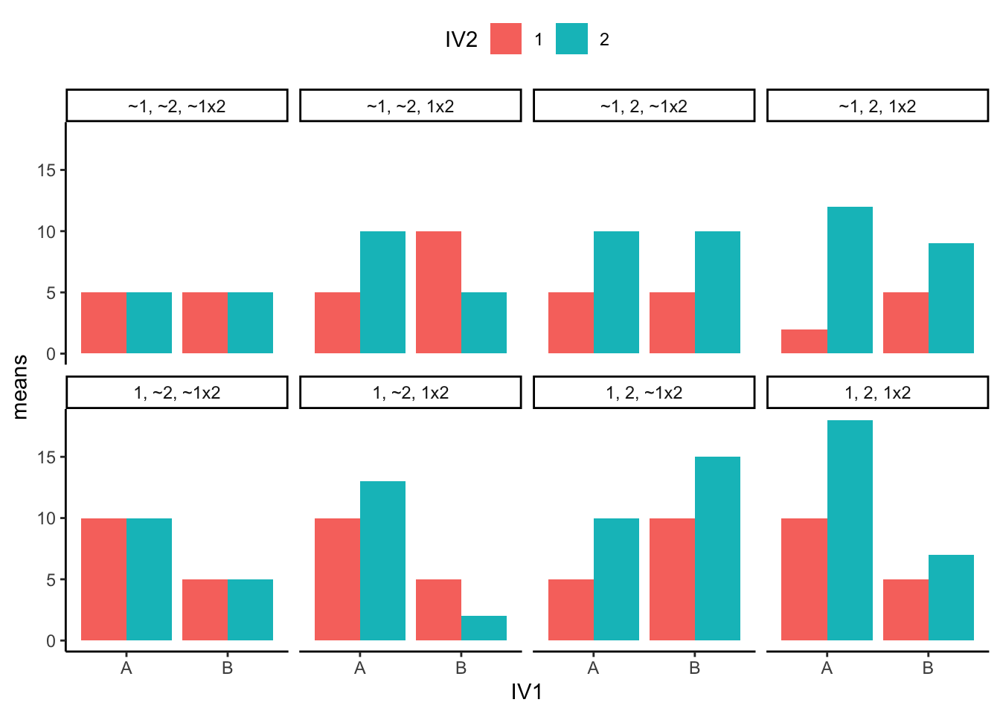

Experimental Design
Basics of Experimental Design: IVs, DVs, and Causality on the Golf Links
Introduction
Important
- Understanding IVs, DVs and Design is crucial for research design
- Golf putting used as a running example for T-Tests, OneWay ANOVA, and 2x2 ANOVA
- Reminder to revisit foundational concepts if struggling
Understanding the basics of experimental design is crucial for conducting scientific research, especially your Mini-Dissertation this year. In this review, we’ll explore the concepts of Independent Variables (IVs), Dependent Variables (DVs), and how experiments are designed to determine causal links. We’ll use golf putting as our running example.
Clarifying Independent and Dependent Variables for Your Mini-Dissertation:
I want to remind you how crucial it is to fully grasp the concept of Independent Variables (IVs) and Dependent Variables (DVs). These were covered in depth last year and are central to the research design of your mini-dissertation. If you’re experiencing challenges now, it may stem from not being completely confident or competent in distinguishing between these key elements.
The Independent Variable is what you, as the researcher, manipulate or categorize, and the Dependent Variable is what you measure as a result of these manipulations. Whether you’re working on an experimental or correlational study, mastering this distinction is critical.
Please take time to revisit this foundational concept, as a clear understanding will simplify the complexity of your research and improve your analysis moving forward.
Independent Variables (IVs)
Definition
An Independent Variable is the factor that researchers manipulate or change in an experiment. It’s the presumed cause in a cause-effect relationship. I remember this by saying “the IV is the variable I manipulate!” - silly, but effective!
Characteristics
- Controlled by the researcher
- Has two or more levels or conditions
- Manipulated to observe its effect on the Dependent Variable
Golf Putting Example
In a golf putting experiment, potential Independent Variables could include: - Hole size (e.g., small vs. big) - Putting distance (e.g., 5 feet vs. 10 feet) - Crowd noise (e.g., booing vs. cheering) - Incentive (e.g., win a egg, or lose an egg)
Dependent Variables (DVs)
Definition
A Dependent Variable is the outcome that is measured in an experiment. It’s the presumed effect in a cause-effect relationship. I remember this as “the DV is the data I collect that depends on the result of the manipulation”
Characteristics
- Observed and measured by the researcher
- Changes in response to the Independent Variable (if a causal relationship exists)
- Quantifiable and measurable in the right way!
Golf Putting Example
In our golf putting experiment, potential Dependent Variables could include:
Percentage of successful putts
Distance from the hole for missed putts
Consistency of putting stroke (measured by the purity of the sound when hit)
Experiments to Determine Causal Links (golf joke!)
Purpose
Experiments are designed to establish a causal relationship between the IV and DV by controlling for other factors that might influence the outcome.
Key Components
- Control: Minimizing the influence of extraneous variables
- Randomization: Assigning participants or conditions randomly
- Replication: Repeating the experiment to ensure reliability
Steps in Experimental Design
- Formulate a hypothesis
- Identify and define the IV and DV
- Design the experimental procedure
- Collect and analyze data
- Draw conclusions
Golf Putting Example (take 1) Between-groups design
Experiment Overview
- Independent Variable (IV):
- Presence of crowd noise (2 levels: Booing vs. Cheering)
- Dependent Variable (DV):
- Putting accuracy (percentage of successful putts)
Between-Groups Design Concept
In this between-groups design:
We have two separate groups of participants
Each group experiences only one condition of the IV
We compare the mean scores of the two groups on the DV
Golf Putting Experiment Example
Hypotheses
- Null Hypothesis (H0):
- There is no significant difference in putting accuracy between the booing and cheering conditions.
- Alternative Hypothesis (H1):
- There is a significant difference in putting accuracy between the booing and cheering conditions.
Method
Participants
- 40 amateur golfers (20 per group)
- Randomly assigned to either the Booing condition or the Cheering condition
Materials
- Standard putters and golf balls
- Putting green with a straight 10-foot putt
- Audio system for the cheering condition
Procedure
- Participants are briefed on the task but not told about the specific hypothesis
- Each participant attempts 20 putts
- Booing group: putts while the horrible crowd boos and jeers
- Cheering group: putts while the crowd goes wild with excitement
Data Structure
Our data might look like this:
| Participant | Condition | Success Rate (%) |
|---|---|---|
| 1 | Booing | 70 |
| 2 | Booing | 65 |
| … | … | … |
| 20 | Booing | 75 |
| 21 | Cheering | 80 |
| 22 | Cheering | 85 |
| … | … | … |
| 40 | Cheering | 78 |
Analysis
We would use an independent samples t-test to analyze this data, comparing the means of the two groups.
Conducting an Independent Samples t-test
Assumptions
- The DV is continuous
- The IV consists of two categorical, independent groups
- There is independence of observations
- No significant outliers in either group
- The DV is approximately normally distributed for each group
- There is homogeneity of variances
Calculation
We won’t go into this here but it might look like this.
Interpretation & Reporting
If p < α (typically 0.05), reject the null hypothesis
Report the t-statistic, degrees of freedom, p-value, and effect size (e.g., Cohen’s d)
There was a significant difference in putting success rates between the cheering (M = 79.74%, SD = 4.15) and booing (M = 70.71%, SD = 4.86) conditions; t(37) = -6.32, p < 0.001, d = 2.00. The cheering condition resulted in a 9.04 percentage point increase in putting success rate compared to the booing condition.
Advantages and Limitations
Advantages
- Avoids order effects and practice effects
- Each participant only needs to be tested once
- Suitable for manipulations that cannot be easily reversed, like a nice or awful crowd
Limitations
- Requires more participants for the same statistical power as a within-subjects design
- Individual differences between groups could affect the results
- For example, one group might coincidentally have more skilled golfers
- Each participant provides data for only one condition, potentially limiting the richness of the data
- More susceptible to the influence of outliers due to smaller per-condition sample sizes
- Cannot account for how individuals might respond differently to various conditions
- May be less sensitive to detecting small effects due to between-subject variability
- Randomization may not always perfectly balance out all potential confounding variables
- If the manipulation is obvious, there might be demand characteristics where participants guess the hypothesis and alter their behavior
- In our specific golf example, environmental factors (like slight changes in wind or green conditions) might affect one group more than the other if all tests for one condition are done together
Golf Putting Example (take 2) Within-subjects design
Experiment Overview
- Independent Variable (IV):
- Incentive type (2 levels: Win an egg vs. Lose an egg)
- Dependent Variable (DV):
- Putting accuracy (percentage of successful putts)
Within-Subjects Design Concept
In this within-subjects design:
Each participant experiences both conditions of the IV
The order of conditions is counterbalanced across participants
We compare each participant’s performance across the two conditions
Golf Putting Experiment Example
Hypotheses
- Null Hypothesis (H0):
- There is no significant difference in putting accuracy between the “win an egg” and “lose an egg” conditions.
- Alternative Hypothesis (H1):
- There is a significant difference in putting accuracy between the “win an egg” and “lose an egg” conditions.
Method
Participants
- 20 amateur golfers
- Each participant completes both conditions in a counterbalanced order
Materials
- Standard putters and golf balls
- Putting green with a straight 10-foot putt
- Eggs as incentives
Procedure
- Participants are briefed on the task but not told about the specific hypothesis
- Each participant attempts 20 putts in each condition
- “Win an egg” condition: Participant wins an egg for each successful putt
- “Lose an egg” condition: Participant starts with 20 eggs and loses one for each missed putt
- Order of conditions is counterbalanced across participants
Data Structure
Our data might look like this:
| Participant | Win Egg (%) | Lose Egg (%) |
|---|---|---|
| 1 | 75 | 70 |
| 2 | 80 | 75 |
| … | … | … |
| 20 | 85 | 80 |
Analysis
We would use a paired samples t-test to analyze this data, comparing each participant’s performance across the two conditions.
Conducting a Paired Samples t-test
Assumptions
- The DV is continuous
- The IV consists of two related groups (repeated measures)
- No significant outliers in the differences between the two related groups
- The distribution of the differences should be approximately normally distributed
Calculation
We won’t go into this here but it might look like this.
Interpretation & Reporting
If p < α (typically 0.05), reject the null hypothesis
Report the t-statistic, degrees of freedom, p-value, and effect size (e.g., Cohen’s d)
There was a significant difference in putting success rates between the ‘win an egg’ (M = 79.87%, SD = 5.09) and ‘lose an egg’ (M = 74.76%, SD = 4.70) conditions; t(19) = 3.55, p < 0.001, d = 0.79. The ‘win an egg’ condition resulted in a 5.96 percentage point increase in putting success rate compared to the ‘lose an egg’ condition.
Advantages and Limitations
Advantages
- Controls for individual differences in golfing ability
- Requires fewer participants for the same statistical power
- Each participant provides data for both conditions, allowing for richer within-subject comparisons
- More sensitive to detecting small effects due to reduced error variance
Limitations
- Potential for order effects (partially addressed through counterbalancing)
- Practice effects may occur as participants become more familiar with the task
- Fatigue effects may influence performance in the second condition
- Carryover effects from one condition to another (e.g., strategy developed in first condition applied to second)
- Cannot be used for manipulations that have lasting effects (unlike the between-subjects design)
- Participants may guess the hypothesis more easily, potentially leading to demand characteristics
- Analysis can be more complex, especially if order effects need to be accounted for
- In our specific golf example, the psychological impact of winning or losing eggs in the first condition might affect performance in the second condition
Bridge: From t-tests to One-Way ANOVA
When we move beyond comparing just two groups, we enter the realm of Analysis of Variance (ANOVA). The simplest form of ANOVA is the one-way ANOVA, which is used when we have one independent variable (IV) with three or more levels.
One-Way ANOVA: Three Group Comparison
Let’s consider an extension of our TeemuBall experiment where we have three types of crowd reactions:
Independent Variable (IV): Crowd Reaction (3 levels: Booing, Silence, Cheering) Dependent Variable (DV): Accuracy (percentage of successful throws)
Design Concept
- Three separate groups of participants
- Each group experiences one type of crowd reaction
Method
Participants
- 60 participants (20 per group)
- Randomly assigned to one of three conditions
Procedure
- Participants are briefed on the task
- Each participant makes 20 throws in their assigned condition
Data Structure
| Participant | Crowd Reaction | Accuracy (%) |
|---|---|---|
| 1 | Booing | 70 |
| 2 | Booing | 75 |
| … | … | … |
| 21 | Silence | 80 |
| … | … | … |
| 41 | Cheering | 85 |
| … | … | … |
Analysis
- One-way between-groups ANOVA
Key Points
- Extension of t-test: One-way ANOVA is an extension of the independent samples t-test, allowing comparison of more than two groups.
- Overall F-test: ANOVA provides an overall F-test to determine if there are any significant differences among the groups.
- Post-hoc tests: If the overall F-test is significant, post-hoc tests (e.g., Tukey’s HSD) can determine which specific groups differ from each other.
- Efficiency: One-way ANOVA is more efficient than conducting multiple t-tests, reducing the risk of Type I errors.
This bridge from t-tests to one-way ANOVA sets the stage for understanding more complex designs like the 2x2 ANOVA, where we introduce a second independent variable.
TeemuBall: 2x2 ANOVA and Three Flavours of Design
Overview of 2x2 ANOVA
A 2x2 ANOVA (Analysis of Variance) is a powerful statistical technique that allows us to examine the effects of two independent variables (IVs) simultaneously on a dependent variable (DV). It extends the concept of a t-test, which compares means between two groups, to a more complex design with four groups.
Components of a 2x2 ANOVA:
- Main Effect of IV1: The overall effect of the first independent variable, averaged across levels of the second IV.
- Main Effect of IV2: The overall effect of the second independent variable, averaged across levels of the first IV.
- Interaction Effect: The combined effect of both IVs, which may be different from what we’d expect based on the main effects alone.
2x2 ANOVA Visual Representations
Basic 2x2 Table Structure
| Incentive | Booing | Cheering |
|---|---|---|
| Win | A | B |
| Lose | C | D |
Main Effect of Crowd Reaction
| Incentive | Booing | Cheering |
|---|---|---|
| Win | A | B |
| Lose | C | D |
- You’d expect A&C to consistently differ from B&D to show Crowd has a general effect
Main Effect of Incentive
| Incentive | Booing | Cheering |
|---|---|---|
| Win | A | B |
| Lose | C | D |
- You’d expect A&B to consistently differ from C&D to show Incentive has a general effect
Interaction Effect
| Incentive | Booing | Cheering |
|---|---|---|
| Win | A | B! |
| Lose | C | D |
If Crowd and Incentive both have general effects, where they interact e.g. B (assuming both positive) something magic might happen there.
If you have trouble grasping this (common) think about Drug interactions. You shouldn’t take Drug 1 and Drug 2 together or your nose will grow. If you are not taking either drug, fine. If you are taking only one of the two drugs, fine. But if you are in the condition where you are taking both drugs… they interact and your nose grows!
These schematic representations help illustrate:
- The basic structure of a 2x2 design
- How main effects involve comparisons across one variable (ignoring the other)
- How interaction effects involve the unique combinations of both variables
Advantages over Multiple t-tests:
- Efficiency: Conducts multiple comparisons in a single analysis, reducing the risk of Type I errors.
- Interaction Detection: Can identify how the effect of one IV depends on the levels of the other IV.
- Increased Power: Generally has more statistical power to detect effects than multiple separate t-tests.
Experiment Overview
Task:
- Participants throw balls into Teemu’s Topmiler (a hat that looks like a basketball net)
Independent Variables (IVs):
1. Crowd Reaction: Booing vs. Cheering
2. Incentive: Win an egg vs. Lose an egg
Dependent Variable (DV):
- Accuracy (percentage of successful throws)
Fully Between-Groups Factorial Design: 2(b) x 2(b) ANOVA
Design Concept
- Four separate (groups of) participants
- Each group experiences one combination of the two IVs
Method
Participants
- 80 participants (20 per group)
- Randomly assigned to one of four conditions
Procedure
- Participants are briefed on the task
- Each participant makes 20 throws in their assigned condition
- Conditions:
- Booing, Win an egg
- Booing, Lose an egg
- Cheering, Win an egg
- Cheering, Lose an egg
Data Structure
| Participant | Crowd Reaction | Incentive | Accuracy (%) |
|---|---|---|---|
| 1 | Booing | Win egg | 75 |
| 2 | Booing | Win egg | 80 |
| … | … | … | … |
| 21 | Booing | Lose egg | 65 |
| … | … | … | … |
| 41 | Cheering | Win egg | 85 |
| … | … | … | … |
| 61 | Cheering | Lose egg | 70 |
| … | … | … | … |
Analysis
- Two-way between-groups ANOVA
Advantages and Limitations
Advantages
- No order effects
- Each participant only tested once
- Can examine both main effects and interaction
Limitations
- Requires larger sample size
- Cannot account for individual differences across conditions
Mixed Design: 2(w) x 2(b) ANOVA
Design Concept
- Two (groups of) participants
- Each participant experiences both levels of Incentive, but only one level of Crowd Reaction
Method
Participants
- 40 participants (20 per group)
- Randomly assigned to either Booing or Cheering condition
Procedure
- Participants are briefed on the task
- Each participant makes 20 throws in the “Win egg” condition and 20 throws in the “Lose egg” condition
- Incentive order is counterbalanced
- Participants remain in their assigned Crowd Reaction condition for all throws
Data Structure
| Participant | Crowd Reaction | Win Egg (%) | Lose Egg (%) |
|---|---|---|---|
| 1 | Booing | 75 | 70 |
| 2 | Booing | 80 | 75 |
| … | … | … | … |
| 21 | Cheering | 85 | 80 |
| … | … | … | … |
Analysis
- Mixed ANOVA with Incentive as within-subjects factor and Crowd Reaction as between-groups factor
Advantages and Limitations
Advantages
- Combines benefits of within and between-subjects designs
- Requires fewer participants than fully between-groups
- Can examine individual differences in response to Incentive
Limitations
- Potential for order effects in the Incentive factor
- More complex analysis
- Cannot examine individual differences across Crowd Reaction conditions
Mixed Design: 2(b) x 2(w) ANOVA
Design Concept
- Two groups of participants
- Each participant experiences both levels of Crowd Reaction, but only one level of Incentive
Method
Participants
- 40 participants (20 per group)
- Randomly assigned to either Win egg or Lose egg condition
Procedure
- Participants are briefed on the task
- Each participant makes 20 throws in the Booing condition and 20 throws in the Cheering condition
- Crowd Reaction order is counterbalanced
- Participants remain in their assigned Incentive condition for all throws
Data Structure
| Participant | Incentive | Booing (%) | Cheering (%) |
|---|---|---|---|
| 1 | Win egg | 75 | 85 |
| 2 | Win egg | 80 | 90 |
| … | … | … | … |
| 21 | Lose egg | 65 | 75 |
| … | … | … | … |
Analysis
- Mixed ANOVA with Crowd Reaction as within-subjects factor and Incentive as between-groups factor
Advantages and Limitations
Advantages
- Combines benefits of within and between-subjects designs
- Requires fewer participants than fully between-groups
- Can examine individual differences in response to Crowd Reaction
Limitations
- Potential for order effects in the Crowd Reaction factor
- More complex analysis
- Cannot examine individual differences across Incentive conditions
Repeated Measures Design: 2(w) x 2(w) ANOVA
Design Concept
- One group of participants
- Each participant experiences all combinations of the two IVs
Method
Participants
- 20 participants
Procedure
- Participants are briefed on the task
- Each participant completes 20 throws in each of the four conditions:
- Booing, Win egg
- Booing, Lose egg
- Cheering, Win egg
- Cheering, Lose egg
- Order of conditions is counterbalanced
Data Structure
| Participant | Booing, Win (%) | Booing, Lose (%) | Cheering, Win (%) | Cheering, Lose (%) |
|---|---|---|---|---|
| 1 | 75 | 70 | 85 | 80 |
| 2 | 80 | 75 | 90 | 85 |
| … | … | … | … | … |
Analysis
- Two-way repeated measures ANOVA
Advantages and Limitations
Advantages
- Requires fewest participants
- Can examine individual differences across all conditions
- Highest statistical power
Limitations
- Most susceptible to order effects and practice effects
- Potential for participant fatigue
- Most complex analysis
- Cannot be used if effects of conditions are long-lasting
Looking at ANOVA main effects and interactions
Into some detail
Note
Copied with thanks from Matt Crump’s Asking Questions with Data OER under CC-BY-NC-SA 4.0 Online Textbook: https://crumplab.github.io/statistics/
Citation: Crump, M. J. C., Navarro, D. J., & Suzuki, J. (2019, June 5). Answering Questions with Data (Textbook): Introductory Statistics for Psychology Students. https://doi.org/10.17605/OSF.IO/JZE52
Designs with multiple factors are very common. When you read a research article you will often see graphs that show the results from designs with multiple factors. It would be good for you if you were comfortable interpreting the meaning of those results. The skill here is to be able to look at a graph and see the pattern of main effects and interactions. This skill is important, because the patterns in the data can quickly become very complicated looking, especially when there are more than two independent variables, with more than two levels.
2x2 designs
Let’s take the case of 2x2 designs. There will always be the possibility of two main effects and one interaction. You will always be able to compare the means for each main effect and interaction. If the appropriate means are different then there is a main effect or interaction. Here’s the thing, there a bunch of ways all of this can turn out. Check out the ways, there are 8 of them:
- no IV1 main effect, no IV2 main effect, no interaction
- IV1 main effect, no IV2 main effect, no interaction
- IV1 main effect, no IV2 main effect, interaction
- IV1 main effect, IV2 main effect, no interaction
- IV1 main effect, IV2 main effect, interaction
- no IV1 main effect, IV2 main effect, no interaction
- no IV1 main effect, IV2 main effect, interaction
- no IV1 main effect, no IV2 main effect, interaction
OK, so if you run a 2x2, any of these 8 general patterns could occur in your data. That’s a lot to keep track of isn’t. As you develop your skills in examining graphs that plot means, you should be able to look at the graph and visually guesstimate if there is, or is not, a main effect or interaction. You will need you inferential statistics to tell you for sure, but it is worth knowing how to know see the patterns.
Figure 1 shows the possible patterns of main effects and interactions in bar graph form. Here is a legend for the labels in the panels.
- 1 = there was a main effect for IV1.
- ~1 = there was not a main effect for IV1
- 2 = there was a main effect for IV2
- ~2 = there was not a main effect of IV2
- 1x2 = there was an interaction
- ~1x2 = there was not an interaction

Figure 2 shows the same eight patterns in line graph form:

The line graphs accentuates the presence of interaction effects. Whenever the lines cross, or would cross if they kept going, you have a possibility of an interaction. Whenever the lines are parallel, there can’t be an interaction. When both of the points on the A side are higher or lower than both of the points on the B side, then you have a main effect for IV1 (A vs B). Whenever the green line is above or below the red line, then you have a main effect for IV2 (1 vs. 2). We know this is complicated. You should see what all the possibilities look like when we start adding more levels or more IVs. It gets nuts. Because of this nuttiness, it is often good practice to make your research designs simple (as few IVs and levels as possible to test your question). That way it will be easier to interpret your data. Whenever you see that someone ran a 4x3x7x2 design, your head should spin. It’s just too complicated.
Interpreting main effects and interactions
The interpretation of main effects and interactions can get tricky. Consider the concept of a main effect. This is the idea that a particular IV has a consistent effect. For example, drinking 5 cups of coffee makes you more awake compared to not drinking 5 cups of coffee. The main effect of drinking 5 cups of coffee vs not drinking coffee will generally be true across the levels of other IVs in our life. For example, let’s say you conducted an experiment testing whether the effect of drinking 5 cups of coffee vs not, changes depending on whether you are in your house or in a car. Perhaps the situation matters? No, probably not so much. You will probably still be more awake in your house, or your car, after having 5 cups of coffee, compared to if you hadn’t.
The coffee example is a reasonably good example of a consistent main effect. Another silly kind of example might be the main effect of shoes on your height. For example, if your IV was wearing shoes or not, and your DV was height, then we could expect to find a main effect of wearing shoes on your measurement of height. When you wear shoes, you will become taller compared to when you don’t wear shoes. Wearing shoes adds to your total height. In fact, it’s hard to imagine how the effect of wearing shoes on your total height would ever interact with other kinds of variables. You will be always be that extra bit taller wearing shoes. Indeed, if there was another manipulation that could cause an interaction that would truly be strange. For example, imagine if the effect of being inside a bodega or outside a bodega interacted with the effect of wearing shoes on your height. That could mean that shoes make you taller when you are outside a bodega, but when you step inside, your shoes make you shorter…but, obviously this is just totally ridiculous. That’s correct, it is often ridiculous to expect that one IV will have an influence on the effect of another, especially when there is no good reason.
The summary here is that it is convenient to think of main effects as a consistent influence of one manipulation. However, when an interaction is observed, this messes up the consistency of the main effect. That is the very definition of an interaction. It means that some main effect is not behaving consistently across different situations. Indeed, whenever we find an interaction, sometimes we can question whether or not there really is a general consistent effect of some manipulation, or instead whether that effect only happens in specific situations.
For this reason, you will often see that researchers report their findings this way:
“We found a main effect of X, BUT, this main effect was qualified by an interaction between X and Y”.
Notice the big BUT. Why is it there? The sentence points out that before they talk about the main effect, they need to first talk about the interaction, which is making the main effect behave inconsistently. In other words, the interpretation of the main effect depends on the interaction, the two things have to be thought of together to make sense of them.
Here are two examples to help you make sense of these issues:
A consistent main effect and an interaction

Figure 3 shows a main effect and interaction. There is a main effect of IV2: the level 1 means (red points and line) are both lower than the level 2 means (aqua points and line). There is also an interaction. The size of the difference between the red and aqua points in the A condition (left) is bigger than the size of the difference in the B condition.
How would we interpret this? We could say there WAS a main effect of IV2, BUT it was qualified by an IV1 x IV2 interaction.
What’s the qualification? The size of the IV2 effect changed as a function of the levels of IV1. It was big for level A, and small for level B of IV1.
What does the qualification mean for the main effect? Well, first it means the main effect can be changed by the other IV. That’s important to know. Does it also mean that the main effect is not a real main effect because there was an interaction? Not really, there is a generally consistent effect of IV2. The green points are above the red points in all cases. Whatever IV2 is doing, it seems to work in at least a couple situations, even if the other IV also causes some change to the influence.
An inconsistent main effect and an interaction

Figure 4 shows another 2x2 design. You should see an interaction here straight away. The difference between the aqua and red points in condition A (left two dots) is huge, and there is 0 difference between them in condition B. Is there an interaction? Yes!
Are there any main effects here? With data like this, sometimes an ANOVA will suggest that you do have significant main effects. For example, what is the mean difference between level 1 and 2 of IV2? That is the average of the green points ( (10+5)/2 = 15/2= 7.5 ) compared to the average of the red points (5). There will be a difference of 2.5 for the main effect (7.5 vs. 5).
Starting to see the issue here? From the perspective of the main effect (which collapses over everything and ignores the interaction), there is an overall effect of 2.5. In other words, level 2 adds 2.5 in general compared to level 1. However, we can see from the graph that IV2 does not do anything in general. It does not add 2.5s everywhere. It adds 5 in condition A, and nothing in condition B. It only does one thing in one condition.
What is happening here is that a “main effect” is produced by the process of averaging over a clear interaction.
How would we interpret this? We might have to say there was a main effect of IV2, BUT we would definitely say it was qualified by an IV1 x IV2 interaction.
What’s the qualification? The size of the IV2 effect completely changes as a function of the levels of IV1. It was big for level A, and nonexistent for level B of IV1.
What does the qualification mean for the main effect? In this case, we might doubt whether there is a main effect of IV2 at all. It could turn out that IV2 does not have a general influence over the DV all of the time, it may only do something in very specific circumstances, in combination with the presence of other factors.
Mixed Designs
Throughout this book we keep reminding you that research designs can take different forms. The manipulations can be between-subjects (different subjects in each group), or within-subjects (everybody contributes data in all conditions). If you have more than one manipulation, you can have a mixed design when one of your IVs is between-subjects and one of the other ones is within-subjects.